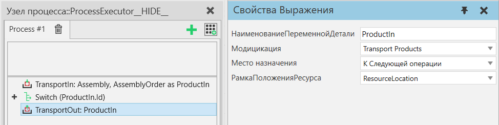

|
Описание
Оператор ТранспортИз позволяет вам транспортировать один или несколько экземпляров продукта из процесса. Оператор может работать в одном из двух режимов: в режиме Transport Products предполагается, что входная переменная будет содержать один или несколько экземпляров продукта, которые будут отправлены последовательно, в то время как в режиме Process an Assembly ожидается, что входная переменная будет содержать один экземпляр сборки, чьи слоты сборки будут очищены путем отправки экземпляров продукта, которые были помещены в них.

Дополнительная информация
Если Место назначения "К Следующей Операции", для успешной перевозки требуется:
1. чтобы в настоящее время существовал получатель того типа продукта, о котором идет речь в данном операторе.
2. получатель должен быть следующим шагом в последовательности шагов процесса.
3. чтобы существовал допустимый маршрут транспортировки от этого процесса к процессу-получателю.
4. наличие ресурсов, необходимых для транспортировки.
Этот оператор будет ждать, пока продукт покинет процесс или сборку. Продолжительность ожидания может зависеть, например, от того, когда другому процессу требуется продукт, доступны ли ресурсы или есть ли емкость в целевом контейнере компонентов.
Оператор ТранспортИз обычно сочетается с оператором ТранспортВ принимающего процесса. Убедитесь, что свойство "Место назначения" оператора ТранспортИз совместимо со свойством Источник оператора ТранспортВ. Также можно использовать оператор ТранспортИз без соответствующего оператора ТранспортВ, обычно в режиме К Контейнеру Компонента.
Транспортировка сборок
Режим Transport Products:
Сборку можно транспортировать как один тип продукта, как и любой другой продукт.
Режим Process an Assembly:
При обработке сборок оператор ТранспортИз обычно используется с оператором Получить сборку. С помощью Получить сборку пользователь может выбрать, какие этапы сборки будут перенесены, а затем эта информация будет передана в качестве заказа на сборку оператору ТранспортИз через свойство НаименованиеПеременнойПорядкаСборки.
Этапы сборки выводятся последовательно, в обратном порядке в ширину. Внутри шага свойство OrderIndex слотов сборки определяет порядок транспортировки. Слоты с одинаковым значением OrderIndex будут транспортироваться одновременно.
Свойства
Название
|
Описание
|
НаименованиеПеременнойДетали
|
Наименование переменной, которая содержит либо Продукт(ы), которые необходимо вывезти, либо Сборку, слоты которой будут освобождены от Продуктов.
Эта переменная может быть одним ссылочным типом или списком. В режиме «Transport Products» все продукты в списке будут транспортироваться последовательно. В режиме обработки сборки будет обработан только первый элемент в списке.
|
Режим
|
Определяет, как продукты транспортируются.
Transport Products - В этом режиме этот оператор переносит экземпляры продукта между процессами.
Подсказка: Экземпляр продукта — это общий термин, который включает в себя как экземпляры деталей, так и экземпляры сборок, поэтому его можно использовать для включения в процесс сборок (частично собранных или полностью собранных).
Process an Assembly - В этом режиме этот оператор используется для переноса экземпляров продукта в экземпляр сборки, который находится в этом процессе.
|
НаименованиеПеременнойПорядкаСборки
|
Наименование переменной AssemblyOrder, определяющей, какие слоты сборки будут очищены, если они в данный момент заполнены.
Подсказка: Используйте оператор Получить сборку для создания AssemblyOrder.
Если оставить пустым, все слоты сборки будут перемещены.
|
РамкаПоложенияРесурса
|
Расположение рамки, куда будет перемещаться ресурс для выбора продукта.
|
Место Назначения
|
Определяет пункт назначения, куда будут переданы продукты для транспортировки.
К Следующей Операции - Экземпляр продукта транспортируется к следующему процессу с помощью транспортной системы. Транспортировка осуществляется по принципу вытягивания, что означает, что следующий процесс запрашивает продукт, как только у него появляется возможность для этого. Этот оператор завершится после того, как продукт будет получен Исполнителем первой транспортной ссылки.
К Контейнеру Компонента - Экземпляр продукта помещается в контейнер компонента, определенный в Место назначения. Если Контейнер имеет выходной порт, связанный с поведением другого контейнера, продукт проходит через Контейнер в подключенный к нему контейнер. Транспортировка осуществляется толкающим способом, что означает, что продукт вывозится,как только в контейнере назначения появляется свободное место.
Подсказка: обычно используется в поточном процессе для буферизации продуктов на конвейере.
К Транспортному Узлу - Экземпляр продукта транспортируется к определенному транспортному узлу с помощью транспортной системы. В этом режиме можно использовать транспортную систему в режиме проталкивания, что означает, что продукты транспортируются к целевому узлу, используя, например, конвейерную систему в качестве буфера.
|
УзелМестаНазначения
|
На какой транспортный узел транспортируется Экземпляр продукта, если свойство Место назначения определено как К Транспортному Узлу.
|
Контейнер
|
В какой контейнер транспортируется экземпляр продукта, если свойство Место назначения определено как К Контейнеру Компонента.
|
ОтправитьКакПакетПродуктов
|
Это свойство может быть использовано для транспортировки нескольких продуктов в виде связки в рамках одной транспортировки.
Выбранные шаги сборки в порядке сборки всегда будут перемещаться индивидуально (по одному слоту сборки за раз при циклическом выполнении выбранных шагов сборки).
Если значение свойства равно true, невыбранные дочерние шаги выбранных шагов сборки (если есть) будут прикреплены к экземпляру продукта в первом слоте их выбранного родительского шага сборки. Более подробно, прикрепленные продукты будут транспортироваться как наборы продуктов. Пакет продуктов — это набор экземпляров продукта, созданный путем объединения их динамических компонентов. Пакеты продуктов не являются экземплярами сборки и не имеют метаданных структуры сборки.
|
|